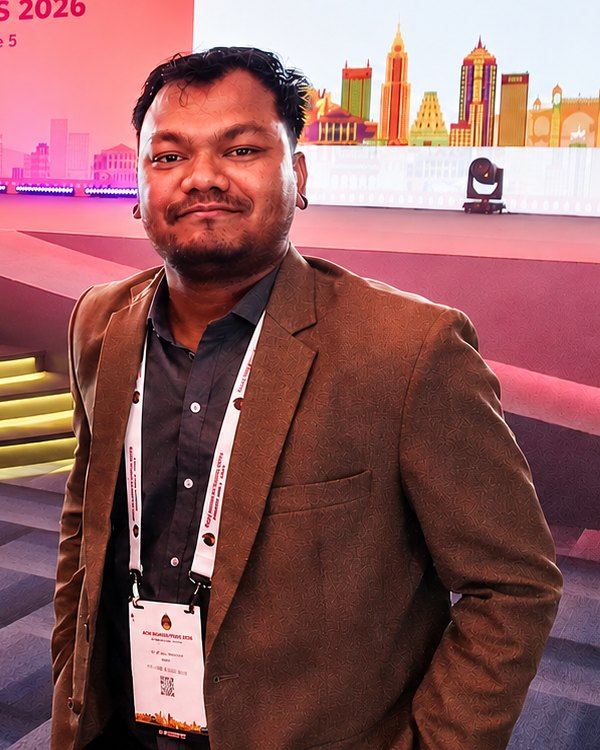
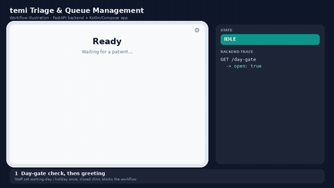
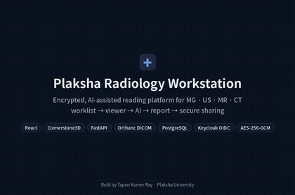
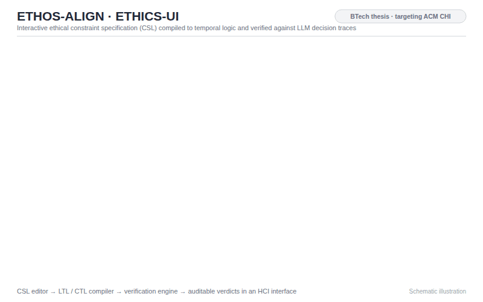
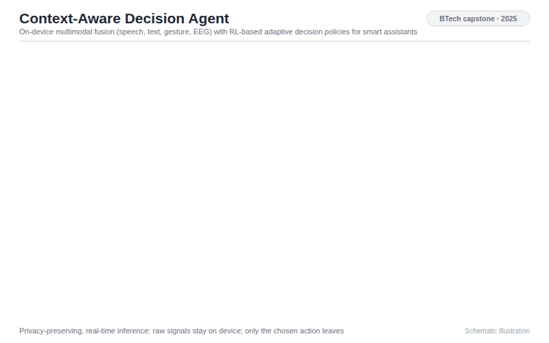
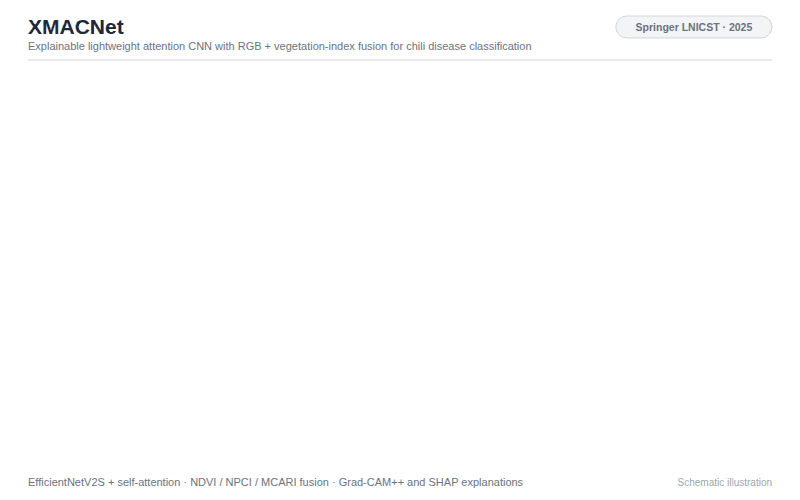
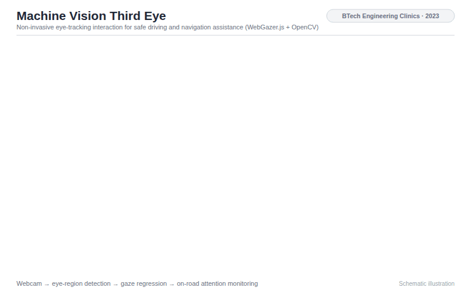

Tapon Kumer Ray
Research Fellow at Plaksha University, working at the intersection of human-computer interaction and multimodal AI systems.

Plaksha University
Mohali, Punjab, India
I am a Research Fellow at Plaksha University, Punjab, India, where I work on LLM-powered multi-agent systems for healthcare robotics on the temi platform and on multimodal image–text fusion pipelines for clinical report generation. I am completing my B.Tech in Computer Science and Engineering at VIT-AP University (Vellore Institute of Technology), Amaravati, where I am advised by Dr. Rajkumar Yesuraj (Thesis: Context-Aware Decision-Making Agent for Smart Assistants).
My research spans multimodal AI systems, intelligent adaptive agents, LLM alignment and computer vision, viewed through a human-centred lens. On one side, I build agents that sense people — fusing speech, gesture, physiological and visual signals — and adapt their decisions to the user's context and emotional state, from empathetic voice assistants to AR interfaces for human-robot collaboration. On the other side, I study how to keep such agents accountable: making ethical constraints specifiable by people, checkable against an LLM's decision traces, and auditable through interactive interfaces. Together, these directions aim at AI systems that are responsive to the people they serve and trustworthy in high-stakes settings such as healthcare and decision support.
News
| May 10–14, 2027 | Paper submitted to CHI 2027, Pittsburgh, USA. Running 🐎 |
|---|---|
| May 3–7, 2027 | Paper submitted to AAMAS 2027, Hanoi, Vietnam. Running 🐎 |
| Apr 26–30, 2027 | Paper submitted to ICLR 2027, San Francisco, USA. Running 🐎 |
| Feb 18–20, 2027 | Paper submitted to IAAI-27, co-located with AAAI-27, Montréal, Canada. Running 🐎 |
| Oct 29–31, 2026 | Context-Aware Emotionally Adaptive Voice Assistants — A Multi-Modal Framework for Empathetic Human-Agent Interaction — is accepted at India HCI 2026, IIT Hyderabad. [paper] |
| May 31 – Jun 5, 2026 | Received the ACM India Fellowship to attend ACM SIGMOD/PODS 2026, Bengaluru, India. |
| Apr 13–15, 2026 | Presented Segment-Based Dynamic Programming for Optimal BSTs at NCUR 2026, Richmond, USA. [post] |
| Apr 12–18, 2026 | Selected for the Student Mentoring Workshop (SMeW) at ICSE 2026, Rio de Janeiro, Brazil. |
| Jan 11–17, 2026 | Received the ACM SIGPLAN PAC Award and served as a Student Volunteer at POPL 2026, Rennes, France. |
| 2025 | Synchronous Emotional Dynamics in Human-AI Collaborative Networks is published at IEEE CICN 2025. [paper] |
| 2025 | XMACNet — An Explainable Lightweight Attention-Based CNN for Chili Disease Classification — is published in Springer LNICST. [paper] |
Current Projects

temi Triage & Queue Management 2026 – present
Autonomous patient check-in and routing for a temi hospital robot. Patients check in by QR code and enter their BP on screen; a rule-based agent routes them to General Medicine or Orthopaedics (hypertensive readings as urgent), and temi escorts them once the door signal shows the doctor is free. Includes a PIN-gated staff panel and an emergency override.

Plaksha Radiology Workstation 2026 – present
An encrypted, AI-assisted platform for reading mammography, ultrasound, MRI and CT: a browser-based 2D/3D viewer with one-click lesion segmentation, evidence-linked AI report drafts, a pre-sign safety check, and end-to-end encrypted sharing with patients, backed by per-study AES-256 encryption and a tamper-evident audit trail.

ETHOS-ALIGN 2026
Ethical trajectory optimization for human-AI systems. ETHOS-ALIGN compiles domain-specific ethical constraints written in a Constraint Specification Language into temporal-logic formulas (LTL/CTL), model-checks LLM decision traces against them at inference time, and exposes an interactive interface for specifying, stress-testing and auditing constraints in medical triage, legal advice and autonomous systems.

Context-Aware Decision-Making Agent 2025
An on-device smart-assistant agent that fuses speech, text, gesture and EEG signals and selects actions with reinforcement-learning-based adaptive policies, keeping inference real-time and data private. Stack: Python · PyTorch · LLaMA-3 · Whisper · ROS.

XMACNet 2025
An explainable, lightweight attention-based CNN with multi-modal fusion for chili-leaf disease classification, built to run on modest hardware while showing which image regions drive each prediction.

Machine Vision Third Eye 2023
A non-invasive eye-tracking interaction model using WebGazer.js and OpenCV for navigation assistance and fatigue detection in constrained driving environments.
Awards & Recognition
| 2026 | ACM India Fellowship — ACM SIGMOD/PODS 2026, Bengaluru, India. |
|---|---|
| 2026 | Selected, Student Mentoring Workshop (SMeW) — ICSE 2026, Rio de Janeiro, Brazil. |
| 2025 | ACM SIGPLAN PAC Award — POPL 2026, the 53rd ACM SIGPLAN Symposium, Rennes, France. |
| 2023 | Finalist, MARK-XXIV National-Level Hackathon — Woxsen University, India. |
| 2022 | Merit-Based Academic Excellence Scholarship (I-SEE) — Vellore Institute of Technology, VIT-AP University, India. |
Books / Writings
AI, Humanity and the Future of CS
AI is shifting from a tool for automation to a third, assisting hand for people — an essay on what that means for humanity and for the future of computer science.
All writing on Medium →